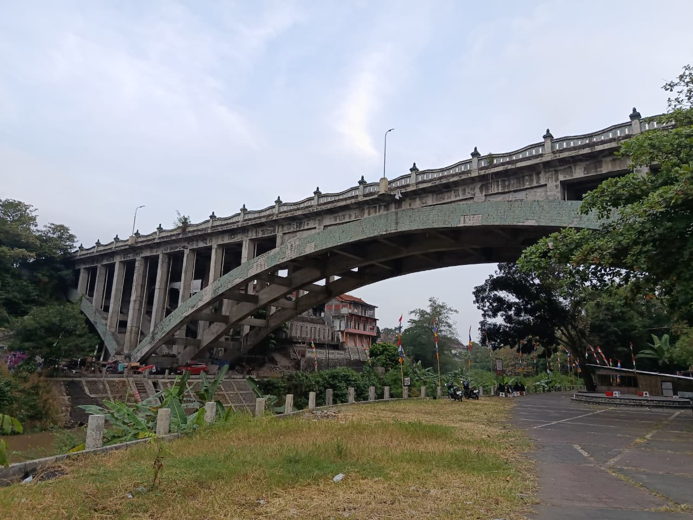
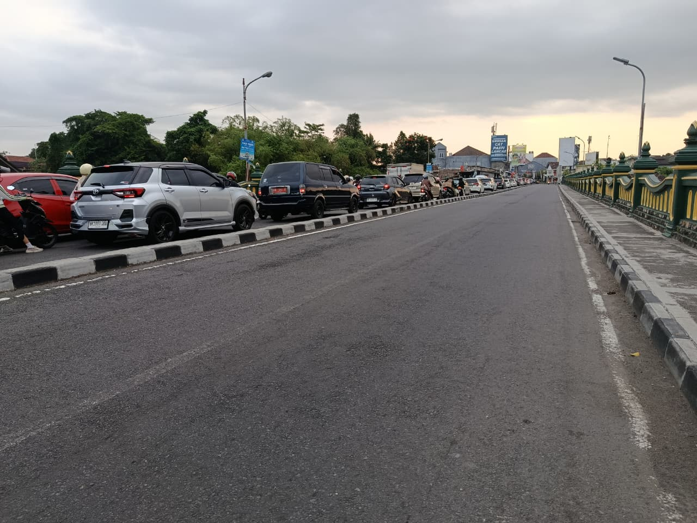

SimBata
.
Beranda
Sebaran Jembatan
Jembatan
Jembatan Baru UGM
Beranda
Sebaran Jembatan
PROF.IR.KRMT. WREKSODININGRAT
Inforasi Jembatan PROF.IR.KRMT. WREKSODININGRAT
Nama Ruas Jalan
1 - BOGEM - NGASEM
No. Jembatan
KB.34.0004.0001.001
Nama Jembatan
KLURAK
Keluarahan
xxx
Kecamatan
xxx
Koodinat
KLURAK
Visualisasi 3D Jembatan
Pilihan Fitur Irisan Model :
Vertikal (Atas-Bawah)
Horizontal (Samping)
Geser untuk Memotong:
Foto Jembatan

